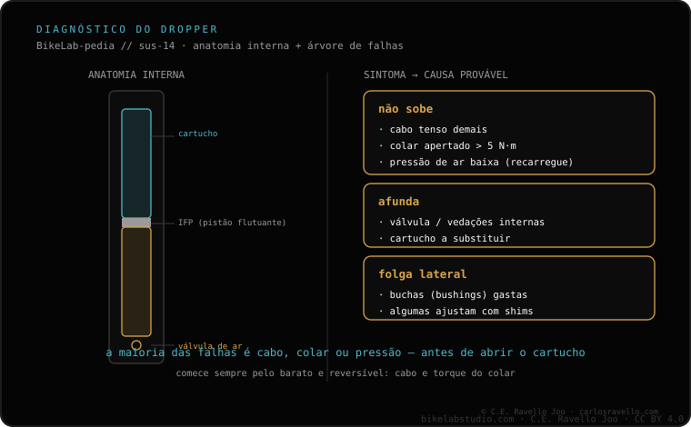

Esse afundamento mole ao sentar quase sempre vem da parte hidropneumática, não do cabo nem do colar. Em canotes com válvula de ar recarregável (tipo Reverb) costuma ser perda de pressão ou a válvula; às vezes se recupera recarregando/sangrando conforme a marca. Em cartuchos selados (tipo OneUp/PNW) é desgaste de retentores: substitui-se o cartucho, não se repara —e não equivale a trocar todo o canote—. Atenção: não é o mesmo que não subir (isso costuma ser colar ou cabo) nem que a folga lateral (buchas).
Distinguir o sintoma exato te poupa dinheiro: o afundamento vertical e o "não sobe" têm causas diferentes.
Afundamento elástico ao sentar. O canote cede alguns centímetros, como uma mola mole, e volta ao levantar. Isso é ar/óleo: ou a câmara de ar perdeu pressão, ou os retentores internos do cartucho deixam passar. Não é o cabo.
Conforme o tipo de canote. Se o seu tem válvula de ar acessível (família Reverb), o procedimento de recarga ou sangria da marca pode devolver o tato. Se for de cartucho selado (OneUp, PNW e muitos modernos), o habitual é substituir o cartucho completo: é a peça pensada para isso, muito mais barata que um canote novo.

Diga o modelo e dizemos se é de válvula recarregável ou de cartucho selado, e o que fazer. Fale com a gente no WhatsApp
Quase sempre a parte hidropneumática: pressão/válvula (tipo Reverb) ou retentores do cartucho (OneUp/PNW).
Em válvula de ar às vezes se recupera recarregando/sangrando; em cartucho selado substitui-se o cartucho, não todo o canote.
Não: o afundamento é vertical (hidropneumático); a folga lateral é das buchas.